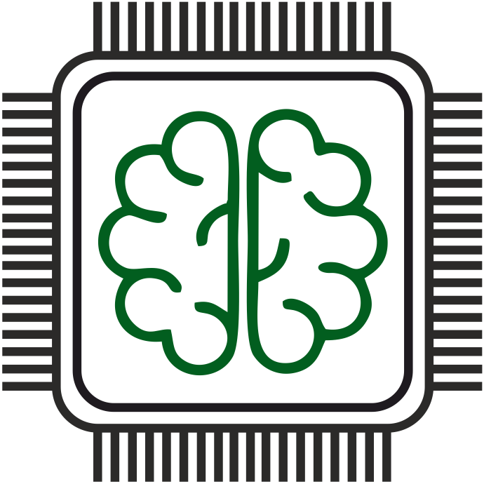

Добро пожаловать в пространство AU_Team!
Здесь мы делимся материалами с чемпионатов. На данный момент доступны следующие ресурсы:
Материалы HighTech 2023
Материалы Профессионалитет 2023 (финал)
Задание финала Чемпионата по профессиональному мастерству «Профессионалы». Возрастная категория - юниоры (14+)
Архив заданий Олимпиада Аверина